1. Introduction to Web Components

What is Web Components ?
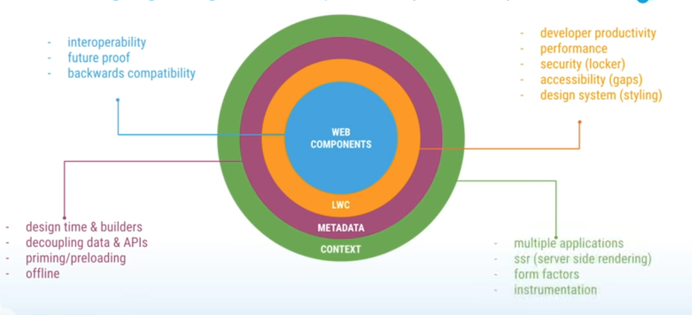
- Custom Elements
- Shadow DOM
- HTML Template
- ES Module
Custom Elements
- Designing and using new types of DOM elements that are fully-featured and conforming.
- Authors can define behaviors and styles for new HTML elements.
- Types of Custom Elements
-
Autonomous custom elements
- Have none of the semantics of existing HTML elements
- All behaviors need to be defined by the author of the custom element.
class AutonomousButton extends HTMLElement { ... } customElements.define("autonomous-button", AutonomousButton);<autonomous-button>Click Me :)</autonomous-button> -
Customized built-ins elements (Spec is work-in-progress, Only Chrome supports now)
- Extend existing HTML elements with custom functionality.
- Inherit semantics from the elements they extend.
class CustomizedButton extends HTMLButtonElement { ... } customElements.define("customized-button", CustomizedButton, { extends: "button" });<button is="customized-button">Click Me :)</button>
-
Shadow DOM
- The DOM (Document Object Model) is a representation of the structure of an html document. The DOM models a document as a tree, with elements in parent-child relationships.
- 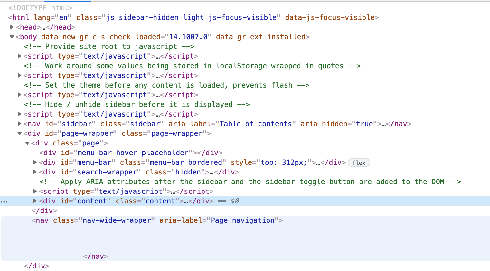
- DOM API contains no support for encapsulation. This makes it hard to develop custom elements
- Style information may leak into or out of other elements in the tree
- IDs may overlap between custom elements and other elements in the document.
- Shadow DOM allows us to attach encapsulated DOM subtrees to elements in a web document.
- Style information inside them cannot apply to outside elements, and vice versa.
const header = document.createElement('header'); const shadowRoot = header.attachShadow({mode: 'open'}); shadowRoot.innerHTML = `<h1>Hello Shadow DOM</h1>`; - Shadow DOM Example
- By default, if an element has shadow DOM, the shadow tree is rendered instead of the element's children.
- To allow children to render, you need to add placeholders for them in your shadow tree. To do this in shadow DOM:
<!-- shadow tree for <my-header> -->
<header>
<h1><slot></slot></h1>
<button>Menu</button>
</header>
<my-header>Shadow DOM</my-header>
- The header renders as if the
element was replaced by the children:
<my-header>
<header>
<h1>Shadow DOM</h1>
<button>Menu</button>
</header>
</my-header>
- Each LWC has a shadow DOM tree attached
LWC offers

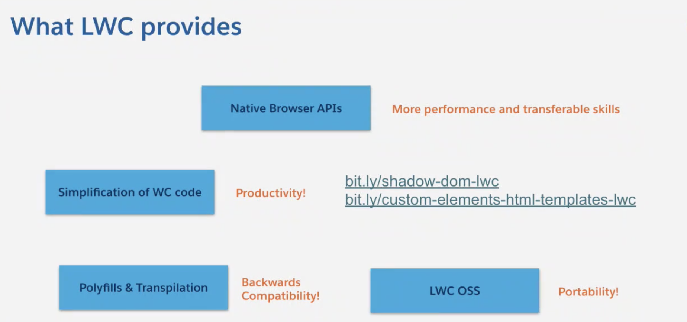
LWC component is composed of three files
-
- HTML template
- From HTML Template spec (Greeting.html)
<template>
<p>Welcome to LWC!</p>
<p>{msg.morning}</p>
<p>{equation}</p>
</template>
- It will be rendered like this: (kebab-case)
<c-greeting>
<p class='heading'>Welcome to LWC!</p>
<p>{msg.morning}</p>
<p>{equation}</p>
</c-greeting>
-
- Javascript file (Greeting.js)
- ES6 Modules spec (import, export)
- Custom Element Spec (LightningElement)
import { LightningElement } from 'lwc';
export default class Greeting extends LightningElement {
msg = { morning: 'All great things are simple!',
evening: 'A person who never made a mistake never tried anything new!'
} // attribute
get equation() { // you can do calculations in getters
return 'e=mc**2';
}
}
-
- metadata file ( to deploy the component into the Salesforce Platform)
<?xml version="1.0" encoding="UTF-8"?>
<LightningComponentBundle xmlns="http://soap.sforce.com/2006/04/metadata">
<apiVersion>51.0</apiVersion>
<isExposed>false</isExposed>
</LightningComponentBundle>
- 4. CSS
```css
.heading {
font-size:30px;
}
- Greeting in Playground
- LWC base components
- Lightning Design System
- Styles are scoped for the component
- Styles defined for the parent component will not affect its child components (shadow DOM)
- Styles are scoped for the component
Practice
- Kovai-Contact
References
- Web Components Spec
- MDN Web components
- Web Components: The Secret Ingredient Helping Power The Web
- Web Components Crash Course
Custom Elements
Shadow DOM
Use anywhere
- Build Connected Apps Anywhere Using Lightning Base Components
- Build Apps with Lightning Web Components Open Source
Practice - Stock Quote Component

Learning Objective:
- Build a component that will render the stock quote. - 5 mins
- Invoke Rest API
Hands-on : 20 mins.
- Invoke Rest API
- Data Rendering
Requirements:
- You are given a list of Stock symbols and qty
- Render them in cards as well as in datatable
- Make REST serives to get the real-time quote for those symbols
- Register at finnhub to get the free api Key
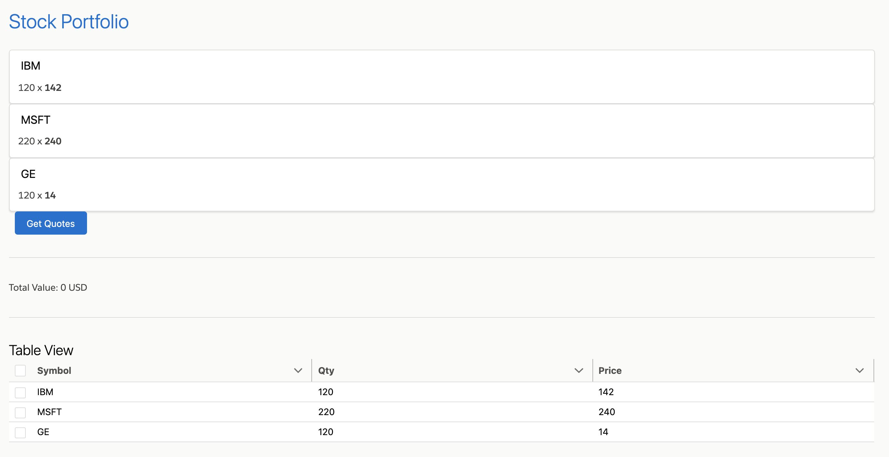
Playground
Prep for next session (Session-3): 20 mins

-
Developer Org setup
-
Whitelisting the url (https://finnhub.io) in your org
-
VS Code Setup
-
SFDX setup
LWC vs Aura

- Aura framework needed to implement a proprietary component model, proprietary language extensions, and proprietary modules.
- LWC uses web stack features implemented natively by browsers, which means that LWC apps are substantially more performant.
- LWC supports
- ECMAScript 6 version (also known as ES6 or ES2015)
- modules, classes, promises, template literals, arrow functions
- One difference between ** LWC and standard Web Components** is TIME-TO-VALUE:
- the amount of code that you have to write to create a component
- To create a component with LWC, you just write a few lines of code, and then the LWC compiler will transform that code, adding the necessary boilerplate code so that those become, at the end, Web Components.
| Aura | LWC | |
|---|---|---|
| Summary | Verbose | Less Verbose, more configurable, easier to understand, test, and refactor in the long-term |
| Developer tooling | Developer Console | VS Code with Extension Pack

Deploy code to Salesforce environments using Salesforce CLI (SFDX) |
| Conventions | specific to aura framework | HTML, CSS, or JavaScript |
| Component | .cmp file | .HTML file |
| Events | Custom Aura Events - have to be registered in the markup,
// aura:handler name="init" value="{!this}" action="{!c.doInit}"
({
doInit : function(component, event, helper) {
var action = component.get("c.findProperties");
action.setParams({
recordId: component.get("v.recordId"),
priceRange: "100000"
});
action.setCallback(this, function(response){
var similarProperties = response.getReturnValue();
component.set("v.similarProperties", similarProperties);
});
$A.enqueueAction(action);
}
})
| standard DOM events
- events simply need to be fired in JavaScript
lightning-button variant="brand" label="Get Time" title="Get Time" onclick={handleGetTimeClick}
Events Handling
|
| Attributes | Defined in .cmp markup
aura:attribute name="title"
type="String"
default="Kovai Contact"
|
Fields or properties In component javascript file (extends LightningElement which extends HTMLElement)
export default class KovaiContact extends LightningElement {
title = "Kovai Contact";
}
|
| Reactivity | To trigger a component re-render, attributes need to be set explicitly using cmp.set() | When you change a class property, the framework implicitly understands that a re-render is needed. The two situations LWC doesn't observe by default for performance reasons: 1. changes in array elements 2. changes in object properties. To tell the framework to observe changes to the properties of an object or to the elements of an array, decorate the field with @track. |
| Integration with the platform | cmp-meta.xml file | Metadata file js-meta.xml |
| Component Life Cycle | most lifecycle events propagated from child to parent | lifecycle events propagated from parent to child |
| Data Binding | bidirectional | unidirectional |
| communicate between components in different DOM hierarchies | Application Events | Lightning message service
- enables us to publish and subscribe to messages on a message channel 
|
| Lightning Data Service Cache is shared among Aura and LWC components Provides access to Salesforce data and metadata without having to go in-depth to understand the particular customizations of an organization or write Apex. |
Available | unidirectional
base form components, wire adapters and functions, and Apex |
| Unit Testing | Hard | Easy with Jest |
Migrate or not from Aura to LWC
- Lightning Message Service can be used to communicate between Aura components and LWC. So, ideally, you could extend your existing Lightning pages in App Builder with LWC even if most of the components are written in Aura.
- Lightning Data Service shares its cache between Aura and LWC. This means components can synchronize data, regardless of which framework they’re written in.
- Aura components can include LWC. As a result, you can extend the functionality of an existing Aura component by writing the new bit of code in a child LWC component.
- JavaScript code can be easily shared between Aura components and LWC.
- Video:Make the Move From Aura to LWC-What You Need To Know
Should move to LWC from Aura
- When you have an Aura component (or application) that’s experiencing poor performance. The significant performance boosts with LWC might help users struggling with an app that feels unresponsive or slow in Aura.
- When you want to use platform features that only support LWC, such as custom property editors in Flow.
New Components LWC or Aura
- LWC!
Resources
LWC vs. Aura: What Architects Need to Know
Development Environment

Create a sfdx project
File Structure
- Create sfdx project kovai
sfdx force:project:create -n kovai
- Project file
$ cat kovai/config/project-scratch-def.json
{
"orgName": "mchinnappan company",
"edition": "Developer",
"features": ["EnableSetPasswordInApi"],
"settings": {
"lightningExperienceSettings": {
"enableS1DesktopEnabled": true
},
"mobileSettings": {
"enableS1EncryptedStoragePref2": false
}
}
}
- create contactCard lwc component contactCard
$ cd kovai
$ cat create_lwc.sh
sfdx force:lightning:component:create -n contactCard --type lwc -d lwc/main/default/lwc/
- Folder structure
$ tree kovai
kovai
├── README.md
├── config
│ └── project-scratch-def.json
├── contactCard-1.png
├── create_lwc.sh
├── deploy_lwc.sh
├── lwc
│ └── main
│ └── default
│ ├── applications
│ ├── aura
│ ├── classes
│ ├── contentassets
│ ├── flexipages
│ ├── layouts
│ ├── lwc
│ │ └── contactCard
│ │ ├── contactCard.html
│ │ ├── contactCard.js
│ │ └── contactCard.js-meta.xml
│ ├── objects
│ ├── permissionsets
│ ├── staticresources
│ ├── tabs
│ └── triggers
├── package.json
├── scripts
│ ├── apex
│ │ └── hello.apex
│ └── soql
│ └── account.soql
└── sfdx-project.json
- Edit the component files
- Markup: contactRecord.html
<template>
<lightning-card title="Contact Record" icon-name="standard:contact">
<template if:true={contact.data}>
<div class="slds-m-around_medium">
<p>{name}</p>
<p>{title}</p>
<p><lightning-formatted-phone value={phone}></lightning-formatted-phone></p>
<p><lightning-formatted-email value={email}></lightning-formatted-email></p>
</div>
</template>
</lightning-card>
</template>
- Javascript : contactRecord.js
import { LightningElement, api, wire } from 'lwc';
import { getRecord } from 'lightning/uiRecordApi';
const FIELDS = [
'Contact.Name',
'Contact.Title',
'Contact.Phone',
'Contact.Email',
];
export default class WireGetRecordDynamicContact extends LightningElement {
@api recordId;
// Let’s use the wire service to get record data and display some field names.
@wire(getRecord, { recordId: '$recordId', fields: FIELDS })
contact;
get name() {
return this.contact.data.fields.Name.value;
}
get title() {
return this.contact.data.fields.Title.value;
}
get phone() {
return this.contact.data.fields.Phone.value;
}
get email() {
return this.contact.data.fields.Email.value;
}
}
- Metadata file : contactRecord.js-meta.xml
<?xml version="1.0" encoding="UTF-8"?>
<LightningComponentBundle xmlns="http://soap.sforce.com/2006/04/metadata">
<apiVersion>51.0</apiVersion>
<isExposed>true</isExposed>
<targets>
<target>lightning__RecordPage</target>
<target>lightning__AppPage</target>
<target>lightning__HomePage</target>
</targets>
</LightningComponentBundle>
- Deploy to the org after you logged into the org with:
$ sfdx force:auth:web:login
sfdx force:source:deploy -u mohan.chinnappan.n_ea2@gmail.com -p lwc/main/default/lwc/contactCard
- Edit the Contact Home Page
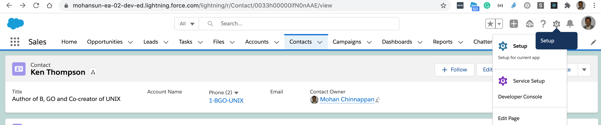
- Update Contact Home Page
- Supplies recordId 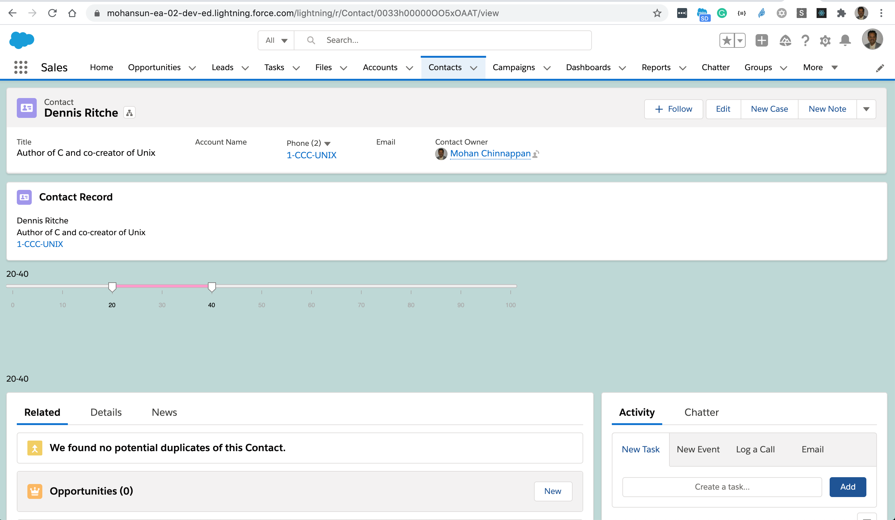
Using LWC in TCRM

LWC with a Step in TCRM

Code generator for LWC with a Step in TCRM
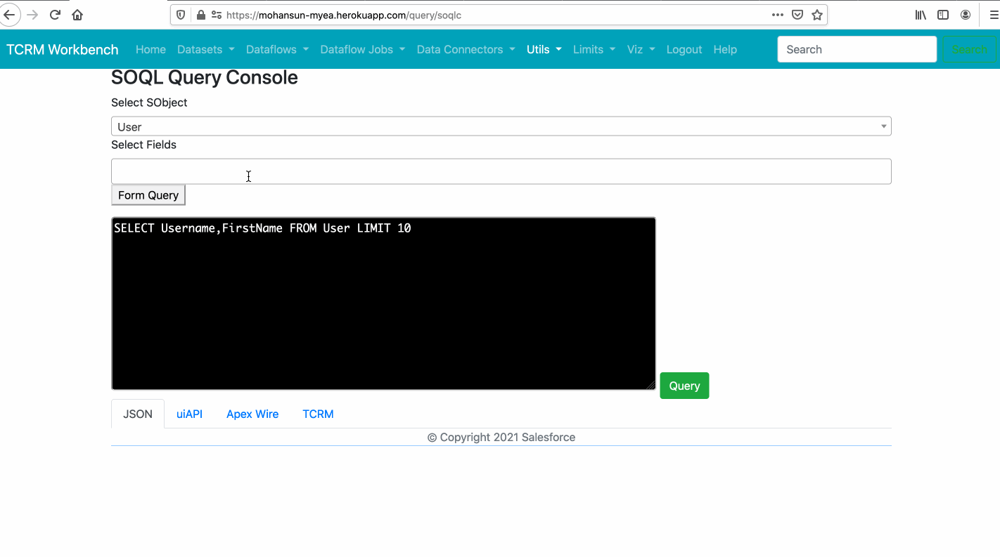
Using Modals in LWC
-
Playground - Component to show the Financial Accounts in FSC
-
-
Playground - mouse over with custom accordion


Custom Events
customTypes for datatable
-
with sorting, delete, row actions
-
filtering support
-
search support
-
Demo
- 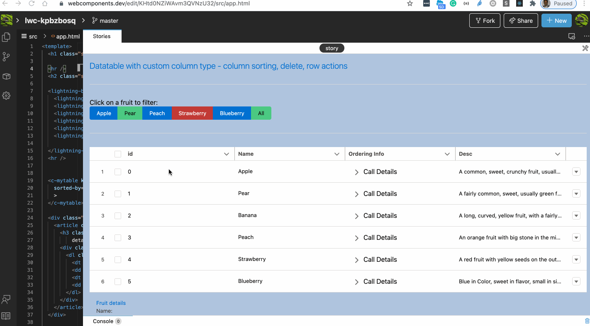
-
Playground
-
Playground with pagination
Looking at navigator object
How to Create Quick Actions with Lightning Web Components
<?xml version="1.0" encoding="UTF-8" ?>
<LightningComponentBundle xmlns="http://soap.sforce.com/2006/04/metadata">
<apiVersion>52.0</apiVersion>
<isExposed>true</isExposed>
<targets>
<target>lightning__RecordAction</target>
</targets>
<targetConfigs>
<targetConfig targets="lightning__RecordAction">
<actionType>Action</actionType>
</targetConfig>
</targetConfigs>
</LightningComponentBundle>
import { LightningElement, api } from 'lwc';
export default class ContactAction extends LightningElement {
@api invoke() {
console.log("Hi, I'm an action.");
}
}
<template>
<p>LWC Action Test</p>
</template>
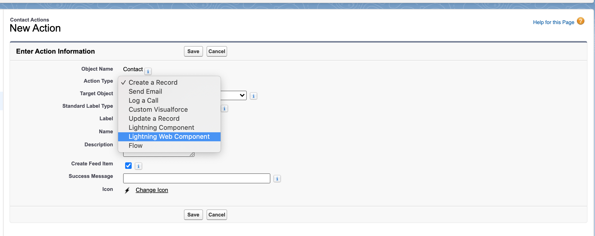 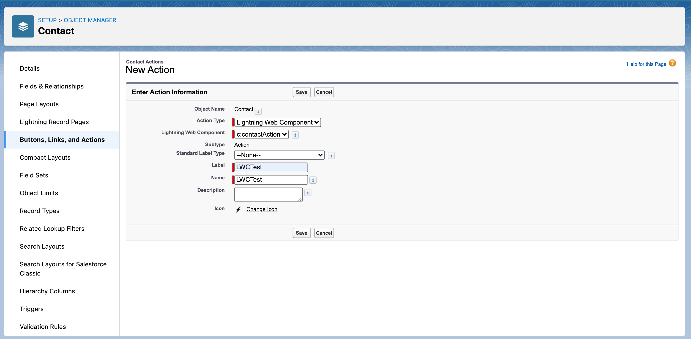 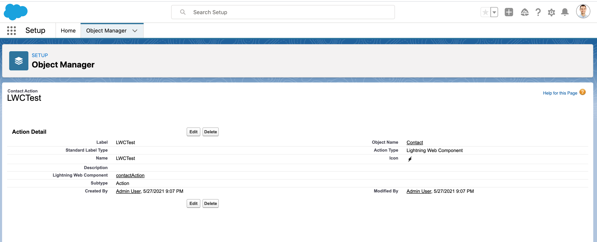 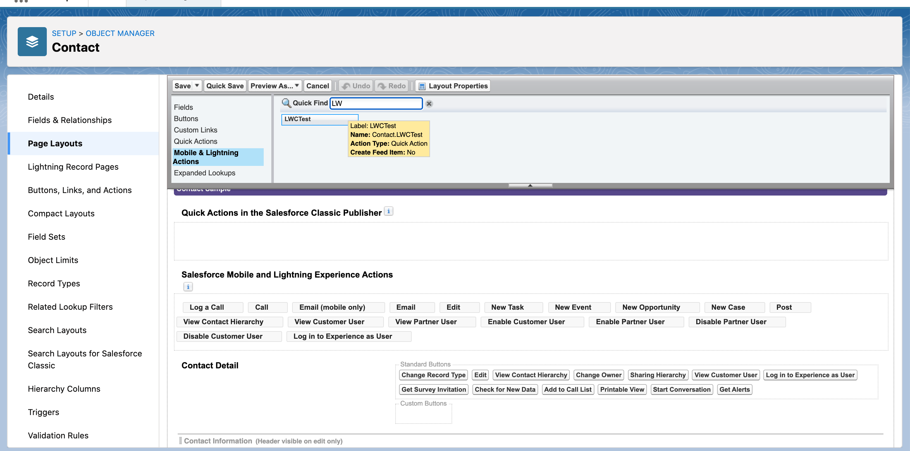 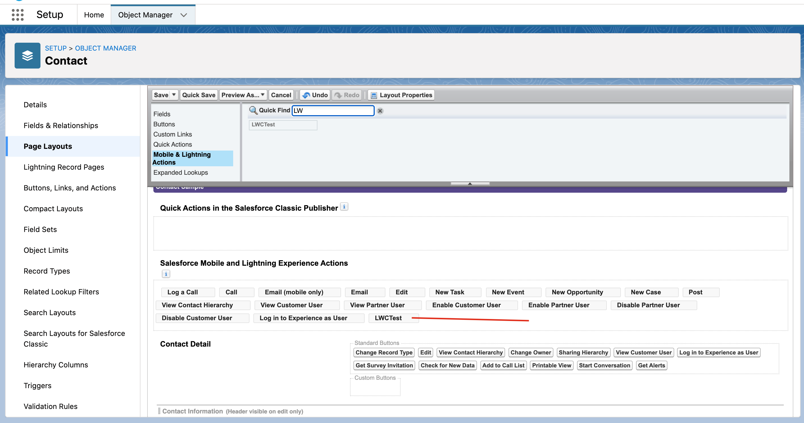 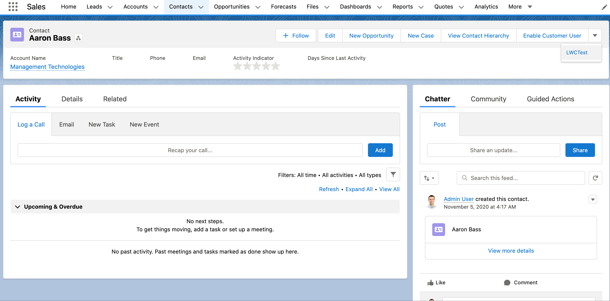 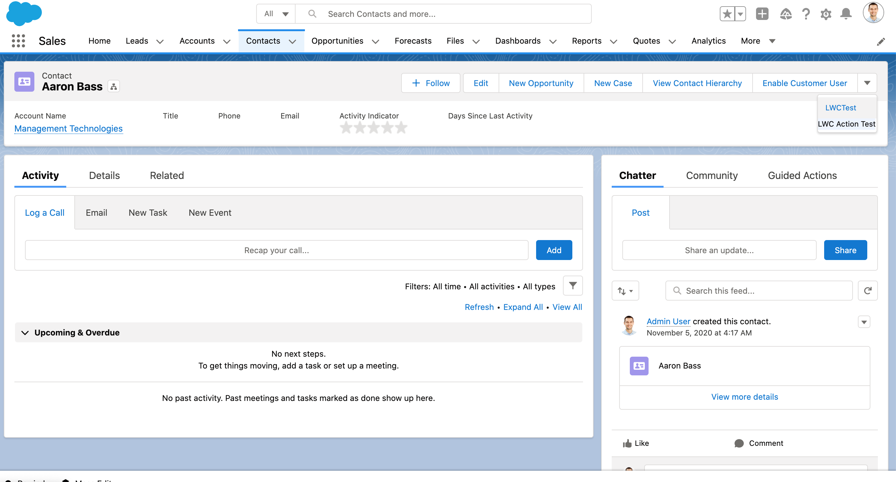 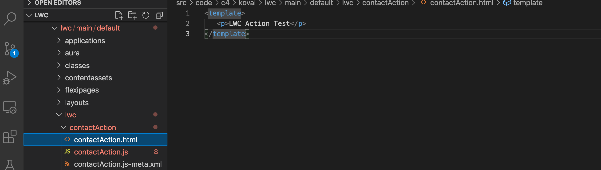 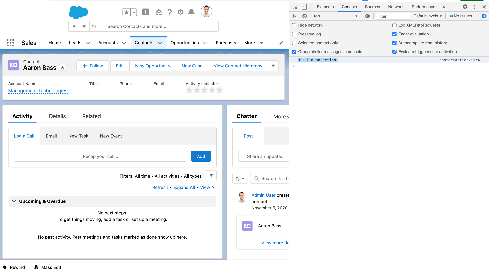
References
- VS Code with Salesforce Extensions
- Salesforce CLI
- Debugging config in org and Chrome Dev Tools
- Local Dev Server
Using Salesforce Data

Code Generator for the given SOQL

Usage
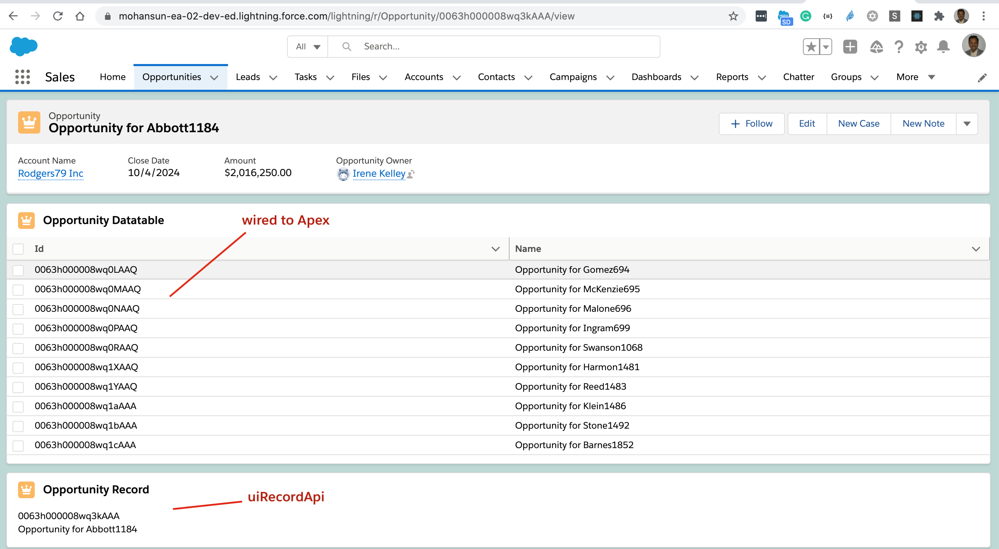
Using uiRecordApi
Component Markup Contact.html
<template>
<lightning-card title="Contact Record" icon-name="standard:contact">
<template if:true={contact.data}>
<template for:each={contact.data} for:item="contact">
<p>{id}</p><p>{name}</p>
</template>
<div class="slds-m-around_medium">
</div>
</template>
</lightning-card>
</template>
Component Javascript: Contact.js
import { LightningElement, api, wire } from 'lwc';
import { getRecord } from 'lightning/uiRecordApi';
const FIELDS = [ 'Contact.Id','Contact.Name', ];
export default class WireGetRecordContact extends LightningElement {
@api recordId;
// Let’s use the wire service to get record data and display some field names.
@wire(getRecord, { recordId: '$recordId', fields: FIELDS })
contact;
get id() {
return this.contact.data.fields.Id.value;
}
get name() {
return this.contact.data.fields.Name.value;
}
}
Component metadata Contact.js-meta-xml
<?xml version="1.0" encoding="UTF-8"?>
<LightningComponentBundle xmlns="http://soap.sforce.com/2006/04/metadata">
<apiVersion>51.0</apiVersion>
<isExposed>true</isExposed>
<targets>
<target>lightning__RecordPage</target>
<target>lightning__AppPage</target>
<target>lightning__HomePage</target>
</targets>
</LightningComponentBundle>
Using Apex controller
Apex Controller OpportunityController.cls
// OpportunityController.cls
public with sharing class OpportunityController {
@AuraEnabled(cacheable=true)
public static List<Opportunity> getOpportunityList() {
return [
SELECT Id,Name FROM Opportunity LIMIT 10
];
}
}
Apex Controller OpportunityController.cls.meta.xml
<?xml version="1.0" encoding="UTF-8"?>
<ApexClass xmlns="http://soap.sforce.com/2006/04/metadata">
<apiVersion>51.0</apiVersion>
<status>Active</status>
</ApexClass>
Component Markup Opportunity.html
<template>
<lightning-card title="Opportunity Datatable" icon-name="standard:opportunity">
<template if:true={opportunitys.data}>
<lightning-datatable
key-field="id"
data={opportunitys.data}
columns={columns}>
</lightning-datatable>
</template>
</lightning-card>
</template>
Component Javascript: Opportunity.js
import { LightningElement, wire } from 'lwc';
import getOpportunityList from '@salesforce/apex/OpportunityController.getOpportunityList';
export default class ApexWireGetRecordsOpportunity extends LightningElement {
columns = [{ label: 'Id', fieldName: 'Id' },
{ label: 'Name', fieldName: 'Name' },
];
// Let’s use the apex wire service to get record data and display some field names.
@wire(getOpportunityList)
opportunitys;
}
Component metadata Opportunity.js-meta-xml
<?xml version="1.0" encoding="UTF-8"?>
<LightningComponentBundle xmlns="http://soap.sforce.com/2006/04/metadata">
<apiVersion>51.0</apiVersion>
<isExposed>true</isExposed>
<targets>
<target>lightning__RecordPage</target>
<target>lightning__AppPage</target>
<target>lightning__HomePage</target>
</targets>
</LightningComponentBundle>
Charting data

Playing with HTML Canvas API
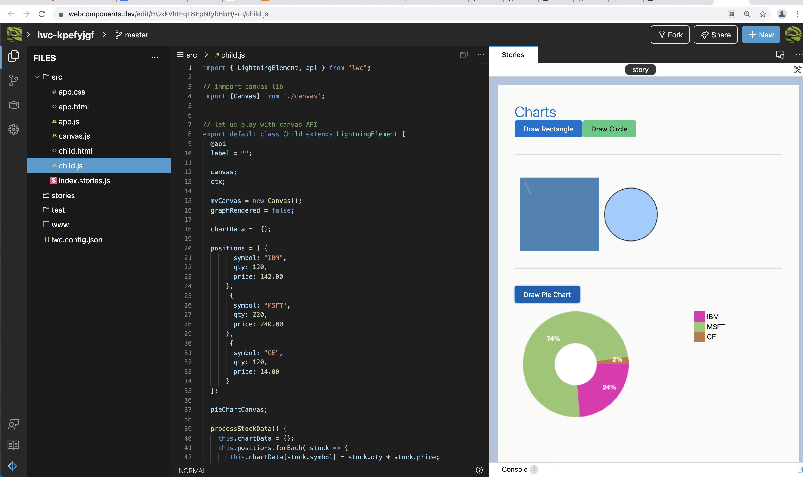
Links
4. Decorators

- A decorator is simply a way of wrapping a function/object with another function/object to extend its existing capabilities
- It can be used to enhance the behavior of an object without requiring the author to reopen its class.
- Provides a flexible alternative to sub-classing for extending functionality.
- Decorators allow you to write cleaner code and achieve composition.
Function Decorators
- Receive a function as an argument and return another function that enhances and extends the function argument.
- The new function does not modify the function argument, but rather uses the function argument in its body.
//decorator function
const allArgsValid = function(fn) {
return function(...args) {
if (args.length != fn.length) {
throw new Error('Only submit required number of params');
}
const validArgs = args.filter(arg => Number.isInteger(arg));
if (validArgs.length < fn.length) {
throw new TypeError('Argument cannot be a non-integer');
}
return fn(...args);
}
}
//ordinary multiply function
let multiply = function(a,b){
return a*b;
}
//decorated multiply function that only accepts the required number of params and only integers
multiply = allArgsValid(multiply);
multiply(6, 8);
//48
multiply(6, 8, 7);
//Error: Only submit required number of params
multiply(3, null);
//TypeError: Argument cannot be a non-integer
multiply('',4);
//TypeError: Argument cannot be a non-integer
The Lightning Web Components programming model has three decorators that add functionality to a property or function.
@api
To expose a public property, decorate a field with @api. Public properties define the API for a component.
@something prop;
----------
decorator
-----
Property
@something doSomething(){};
----------
decorator
-----
Method
- exposes a property as public
- exposes a method as public
import {LightningElement, api} from 'lwc';
export default class KovaiContact extends LightningElement {
@api recordId;
}
@track
- Fields are reactive. If a field’s value changes, and the field is used in a template or in a getter of a property that’s used in a template, the component rerenders and displays the new value.
- When a field contains an object or an array say
names = ['Einestein', 'Ramanujan']there’s a limit to the depth of changes that are tracked.- To tell the framework to observe changes to the properties of an object or to the elements of an array, decorate the field with
@track.
- To tell the framework to observe changes to the properties of an object or to the elements of an array, decorate the field with
@wire
- To read Salesforce data, LWCs use a reactive wire service.
- When the wire service provisions data, the component rerenders.
Wire Service
- The wire service provisions an immutable stream of data to the component. Each value in the stream is a newer version of the value that precedes it.
- To mutate the data, a component should make a shallow copy of the objects it wants to mutate
- The wire service delegates control flow to the Lightning Web Components engine.
- Great for read operations, but it isn’t great for create, update, and delete operations.
public with sharing class ContactController {
@AuraEnabled(cacheable=true)
public static List<Contact> getContactList() {
return [
SELECT Id, Name, Title, Phone, Email, Picture__c
FROM Contact
WHERE Picture__c != NULL
WITH SECURITY_ENFORCED
LIMIT 10
];
}
}
// WITH SECURITY_ENFORCED: https://developer.salesforce.com/docs/atlas.en-us.apexcode.meta/apexcode/apex_classes_with_security_enforced.htm
<template>
<div class="slds-var-m-around_medium">
<template if:true={contacts}>
<template for:each={contacts} for:item="contact">
<p key={contact.Id}>{contact.Name}</p>
</template>
</template>
</div>
</template>
import { LightningElement, wire } from 'lwc';
// import { adapterId } from 'adapterModule';
// adapterModule format: namespace/moduleName
// To import a reference to an object:
// import ACCOUNT_OBJECT from '@salesforce/schema/Account';
// To import a reference to a field:
// import FIELD_NAME from '@salesforce/schema/object.field';
// To import a reference to a field via a relationship:
// import SPANNING_FIELD_NAME from '@salesforce/schema/object.relationship.field';
import getContactList from '@salesforce/apex/ContactController.getContactList';
export default class ContactsMgr extends LightningElement {
contacts;
error;
//@wire(adapterId, adapterConfig)
// propertyOrFunction;
@wire(getContactList)
wiredContacts ({ error, data}) {
// the results are returned to the property’s data property or error property.
if (data) {
this.contacts = data;
this.error = undefined;
} else if (error) {
this.error = error;
this.contacts = undefined;
}
}
}
Another example for @wire
import { LightningElement, api, wire } from 'lwc';
import { getRecord } from 'lightning/uiRecordApi';
import ACCOUNT_NAME_FIELD from '@salesforce/schema/Account.Name';
export default class Record extends LightningElement {
@api recordId;
@wire(getRecord, { recordId: '$recordId', fields: [ACCOUNT_NAME_FIELD] })
record;
}
What is that $ in recordId above?
- In the wire adapter’s configuration object, prefix a value with $ to reference a property of the component instance. The $ prefix tells the wire service to treat it as a property of the class and evaluate it as this.propertyName.
- The property is reactive. If the property’s value changes, new data is provisioned and the component rerenders.
References
- JavaScript Decorators From Scratch
- LWC Fundamentals - Understanding Decorators | Developer Quick Takes
- LWC Fundamentals - The @api Decorator | Developer Quick Takes
5. Component Life Cycle

- Lifecycle managed by the framework
- The framework:
- creates components,
- inserts them into the DOM, renders them, and removes them from the DOM.
- monitors components for property changes
constructor()
- Framework fires this method when a component instance is created.
connectedCallback()
- lifecycle hook fires when a component is inserted into the DOM.
disconnectedCallback()
- lifecycle hook fires when a component is removed from the DOM.
renderedCallback() - unique to LWC
- Use it to perform logic after a component has finished the rendering phase.
errorCallback() - unique to LWC
- Implement it to create an error boundary component that captures errors in all the descendent components in its tree

6. Events

<!-- paginator.html -->
<template>
<lightning-layout>
<lightning-layout-item>
<lightning-button label="Previous" icon-name="utility:chevronleft" onclick={previousHandler}></lightning-button>
</lightning-layout-item>
<lightning-layout-item flexibility="grow"></lightning-layout-item>
<lightning-layout-item>
<lightning-button label="Next" icon-name="utility:chevronright" icon-position="right" onclick={nextHandler}></lightning-button>
</lightning-layout-item>
</lightning-layout>
</template>
// paginator.js
import { LightningElement } from 'lwc';
export default class Paginator extends LightningElement {
// These events are simple “something happened” events
previousHandler() {
this.dispatchEvent(new CustomEvent('previous'));
}
nextHandler() {
this.dispatchEvent(new CustomEvent('next'));
}
}
Using paginator
<template>
<lightning-card title="EventSimple" icon-name="standard:logging">
<div class="slds-var-m-around_medium">
<p
class="slds-text-align_center slds-var-m-vertical_medium content"
>
Page {page}
</p>
<c-paginator
class="slds-show slds-is-relative"
onprevious={handlePrevious}
onnext={handleNext}
></c-paginator>
</div>
</lightning-card>
// EventSimple.js
import { LightningElement } from 'lwc';
export default class EventSimple extends LightningElement {
page = 1;
handlePrevious() {
if (this.page > 1) {
this.page = this.page - 1;
}
}
handleNext() {
this.page = this.page + 1;
}
}
Pass Data in an Event
// Creates the event with the contact ID data.
const selectedEvent = new CustomEvent('selected', { detail: this.contact.Id });
7. Lightning Data Service

-
Records loaded in Lightning Data Service (LDS) are cached and shared across components.
-
If a page is composed of components showing the same record, all components show the same version of the record.
-
Components accessing the same record see significant performance improvements, because a record is loaded once, no matter how many components are using it.
-
Supports all custom objects and all the standard objects that User Interface API supports.
-
External objects, person accounts, and custom metadata types are not supported.
Managed
- Lightning Data Service manages data for you
- changes to a record are reflected in all the technologies built on it.
- Contrastingly, data from Apex is not managed; you must refresh the data.
- If Lightning Data Service (LDS) detects a change to a record or any data or metadata it supports
- all components using a relevant @wire adapter receive the new value. The detection is triggered if:
- A Lightning web component mutates the record.
- The LDS cache entry expires and then a Lightning web component’s @wire triggers a read
- all components using a relevant @wire adapter receive the new value. The detection is triggered if:
- LDS Loads record data progressively.
- Caches results on the client.
- Invalidates cache entries when dependent Salesforce data and metadata changes.
- Optimizes server calls by bulkifying and de-duping requests.

8. Security with Lightning Locker

- Lightning Locker provides:
-
component isolation and security that allows code from many sources to execute and interact using safe, standard APIs and event mechanisms.
-
Lightning Locker is enabled for all custom Lightning web components.
-
strict mode "use strict"
- Lightning Locker implicitly enables JavaScript strict mode everywhere
- JavaScript strict mode makes code more secure, robust, and supportable.
DOM Access Containment
- A component can only traverse the DOM and access elements that it created.
- This behavior prevents the anti-pattern of reaching into DOM elements owned by other components.
- Lightning web components can’t use the
windowordocumentglobal properties to query for DOM elements. - For example, use
this.template.querySelector()instead ofdocument.querySelector().
Secure Wrappers
- For security, Lightning Locker restricts the use of global objects by hiding an object or by wrapping it in a secure version of the object.
- For example, the secure version of window is
SecureWindow. - Locker intercepts calls to window and uses SecureWindow instead.
- For example, the secure version of window is
Third-Party Web Components
- To prevent security risks, you can’t use third-party web components on the Salesforce platform.
- Web components are custom elements. To define a custom element, you must use the customElements.define API. However, this API is global, and allows you to globally register a component name.
- Registering a name globally is a security risk because an attacker could register any name and take over the page.
- Lightning Locker’s SecureWindow wrapper blocks the customElements methods that create custom web components.
Locker Console
- We can use locker console to check your code
- Locker API Viewer
- Build Secure Apps with Lightning Web Components
Demo of using Locker Console
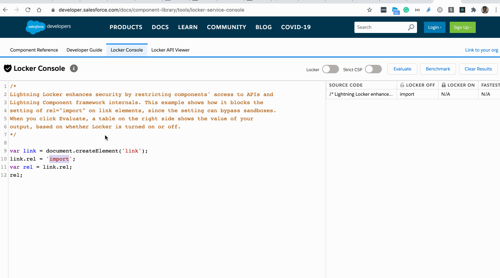
/*
Lightning Locker enhances security by restricting components' access to APIs and
Lightning Component framework internals.
- The example #1 shows how it blocks the setting of rel="import" on link elements, since the setting can bypass sandboxes.
When you click Evaluate, a table on the right side shows the value of your
output, based on whether Locker is turned on or off.
- The example #2 shows results of document.cookie
-
*/
var link = document.createElement('link');
link.rel = 'import';
var rel = link.rel;
rel;
const cookies = [];
const citems = document.cookie.split(';');
citems.forEach( item => {
const [name, value] = item.split('=');
cookies.push( {name, value});
});
JSON.stringify(cookies, null,4);
- Note: Your LWC component is limited in accessing
document.cookie- only cookies that were set from the LWC component can be accessed.
Component code
import { LightningElement } from "lwc";
const columns = [
{fieldName: "name", label: 'Name'},
{fieldName: "value", label: 'Value'},
];
export default class App extends LightningElement {
title = "Cookies";
columns = columns;
// Note: Your LWC component is limited in accessing document.cookie
// - only cookies that were set from the LWC component can be accessed.
get cookies() {
document.cookie = "favorite_fruit=apple";
const citems = document.cookie.split(';');
const cookies = [];
citems.forEach( item => {
const [name, value] = item.split('=');
cookies.push( {name, value});
});
return cookies;
}
}
Component markup
<template>
<div class="app slds-p-around_x-large">
<h1 class="slds-text-heading_large">{title}</h1>
<lightning-datatable key-field="name" data={cookies} columns={columns}>
</lightning-datatable>
<template for:each={cookies} for:item="cookie">
<div key={cookie.value}>
{cookie.name} = { cookie.value}
<hr />
</div>
</template>
</div>
</template>
Component use
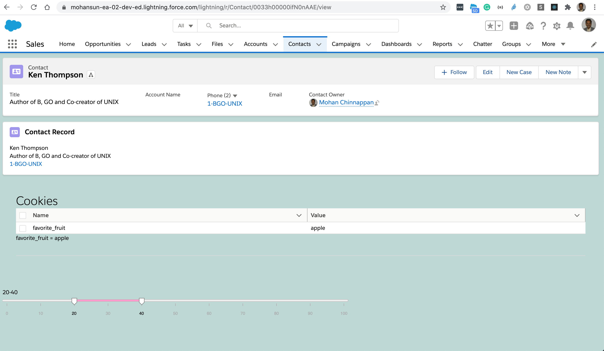